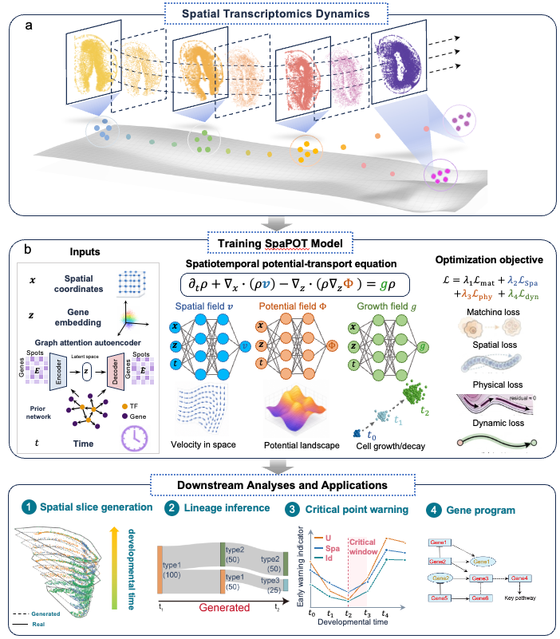

Graph-prior input
Expression states, spatial coordinates, and GAT gene-prior latent states are used jointly, reducing the interpretability gap caused by PCA-only or unstructured latent inputs.
Spatial Potential Optimal Transport
SpaPOT is a spatial-potential optimal transport framework for reconstructing continuous spatial-transcriptomic dynamics from discrete tissue slices, then connecting generated trajectories with interpretable fate shifts and critical transition windows.
Project question
Spatial transcriptomic time series are usually observed as discrete slices, while development is continuous and involves spatial migration, cell-state transitions, and mass changes. SpaPOT places spatial position, gene-latent state, growth, and potential landscapes into one dynamical framework to connect observed time points and identify candidate critical transition windows.
Model overview
The opening model graphic summarizes model inputs, fitted fields, physics-informed training, and critical-biology outputs in one compact visual.

(1) Graph-prior input. SpaPOT starts from spatial coordinates, expression states and graph-prior GAT latent representations, so the model input keeps both tissue geometry and gene-network structure.
(2) Fitted spatial-potential field. The fitted field separates spatial velocity from gene-latent potential-gradient dynamics: spatial motion is modeled as a vector field, while gene-state movement follows a potential landscape.
(3) Physics-informed loss. Optimal transport matching, GAT reconstruction, mass dynamics and physics residual terms jointly regularize interpolation between observed slices.
(4) Critical biology output. The output is not only reconstructed intermediate slices; the model also ranks low-gradient, high-action states as candidate critical windows and perturbation-sensitive regions.
Expression states, spatial coordinates, and GAT gene-prior latent states are used jointly, reducing the interpretability gap caused by PCA-only or unstructured latent inputs.
Spatial motion is represented by a direct velocity field, while gene-latent dynamics are driven by a potential gradient, avoiding a single mixed velocity vector with weak mechanistic meaning.
The model is not only used for interpolation; low-gradient and high-action states are translated into candidate critical windows and perturbation-sensitive regions.
Innovation
This section follows the model overview and states the main methodological innovations before moving into the result figures.
The potential landscape explains the direction of gene-latent state transitions, turning developmental change from a black-box velocity into a landscape with gradients and critical regions.
Spatial coordinates and expression latent states share one temporal trajectory but are governed by distinct mechanisms, making tissue morphology, cell migration, and fate dynamics easier to interpret separately.
The result story goes beyond interpolation and reconstruction by adding critical scores, branch sensitivity, gene perturbation, and terminal fate-shift evidence.
Evidence route
The result package is structured as a six-figure story: a graphical abstract, one controlled benchmark, three real biological datasets, and one model-comparison endpoint.
The graphical abstract introduces the core problem, model structure, key outputs, and biological interpretation in the first major visual.
Shows that the model can recover continuous trajectories, cell-type proportions, potential fields, and early-warning-style critical scores in a controlled system.
The main real-data case, connecting slice alignment, generated trajectories, potential landscapes, critical metrics, lineage shifts, and gene perturbation.
The second real dataset, used to show time-point generation, branch criticality, lineage transition, and functional enrichment.
The third real dataset, used to show injury/developmental trajectories, critical scores, EGC-family gene programs, and potential-associated expression.
Summarizes how SpaPOT differs from other methods in prediction, interpolation, alignment, and biological interpretability.
Downstream interpretation
SpaPOT downstream analysis turns reconstructed trajectories into biological hypotheses. The final panels can later be replaced with the full downstream figures, while this section keeps the narrative position clear.
Use the learned potential landscape and trajectory action to mark transition windows where cell states are most sensitive or least stable.
Compare branch composition, generated labels, and terminal-state tendency across simulated and real tissue systems.
Connect predicted dynamic regions with enrichment, perturbation response, and potential-associated expression programs.
Reserve this area for criticality, fate-shift, perturbation, enrichment, and gene-program evidence once the final panels are ready.
Result map
The six figures are organized as a manuscript-ready evidence map, linking each dataset to the biological or methodological claim it supports.
Data visualization
The visualization area is separated into one simulation panel and one real-data panel. The real-data panel switches between mouse midbrain, zebrafish, and axolotl brain trajectories while keeping the same play, pause, frame-seeking, and speed controls.
Current figures
Each figure entry includes its role in the paper, a time axis, a static preview, and links to animation or PDF assets when available.
Figure 1
The graphical abstract introduces the core problem, model structure, and major outputs.
Claim discipline
Gene perturbation results should be described as model-inferred in silico perturbations, not real CRISPR or in vivo perturbation experiments. If detailed figure pages are added later, this boundary should remain visible near the perturbation-related panels.